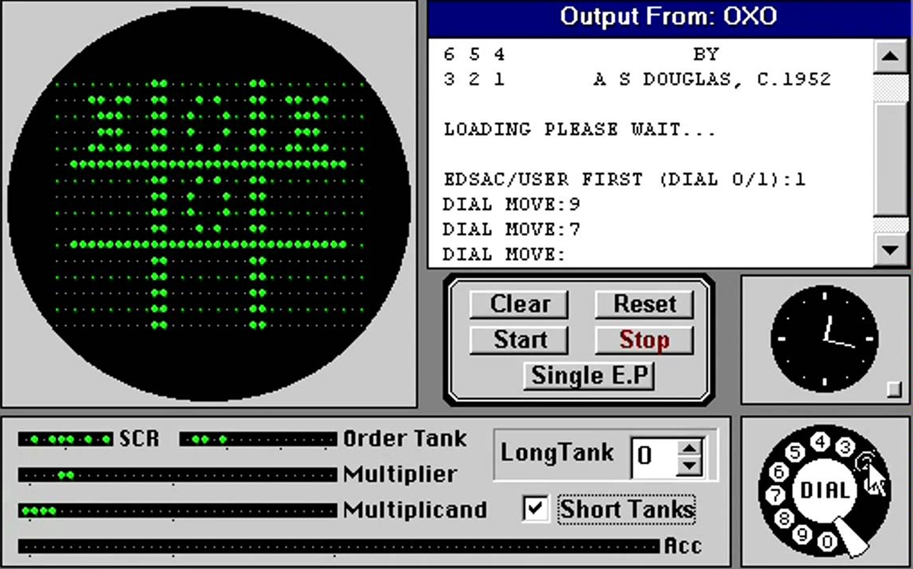

1952 год.
Создана первая логическая компьютерная игра «OXO»
«OXO» - компьютерная реализация «крестиков-ноликов» (поле три на три клеточки, пользователь делал свой ход, после этого компьютер делал ответный ход). Игра была создана А.С. Дугласом во время его обучения на докторскую степень в Кембриджском университете (Великобритания). Дуглас писал свою диссертацию на тему взаимодействия человека и компьютера, а игру использовал как наглядную иллюстрацию. Игра существовала в единственном экземпляре на большом компьютере – мэйнфрейме EDSAC.